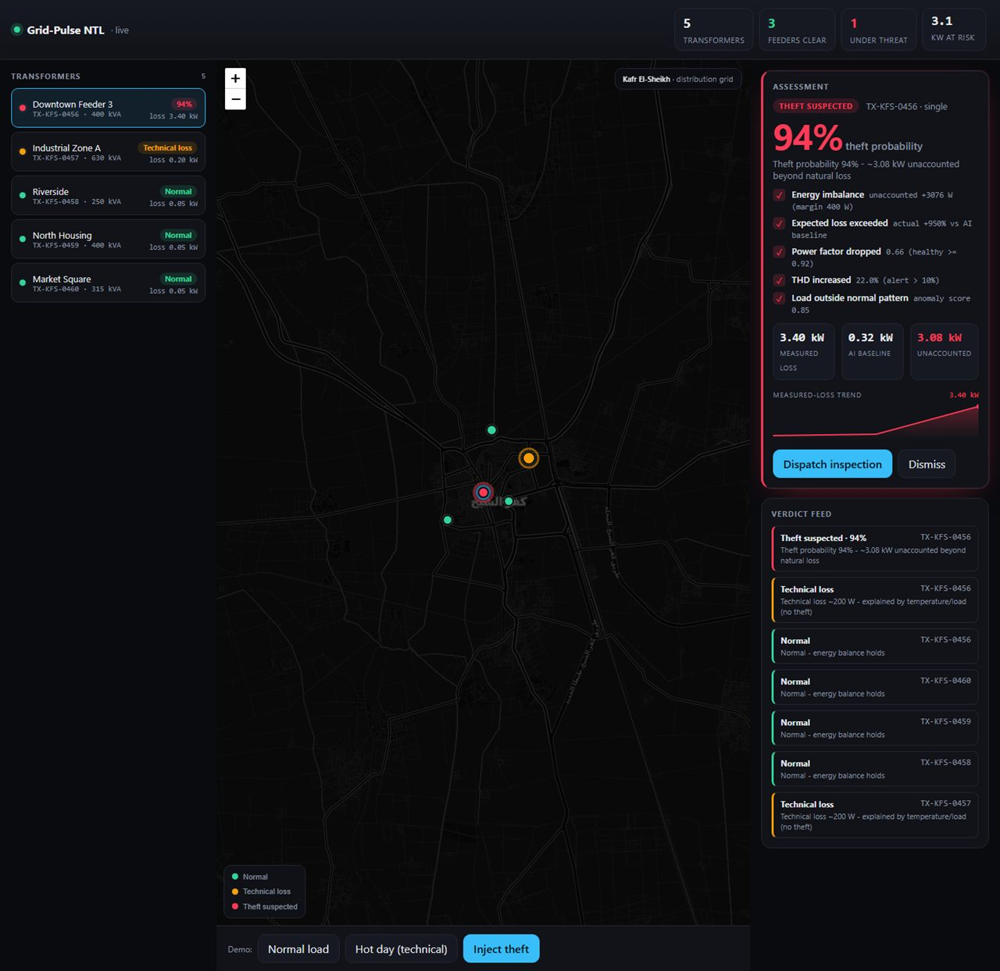

Grid-Pulse NTL
Autonomous Electricity-Theft Detection for the Distribution Grid
Where it hurts
Distribution companies are blind to where the loss actually happens.
- → Revenue bleeding from every feeder
- → Transformers overloaded by unbilled demand
- → Worse load-shedding for paying customers
Not every loss is theft.
Technical loss — natural
Cables shed energy as heat. That loss rises with temperature and with load — Egyptian summer, peak hours.
Legitimate · no alarmNon-technical loss — theft
Energy delivered, consumed, and never billed. Invisible in the totals, because it hides inside the natural loss.
Unexplained · must be flaggedA naive "meter-difference" alarm cannot tell them apart — so on a hot day it fires on physics, floods operators with false positives, and gets switched off.
Fixed thresholds cannot follow a living grid.
Current Approaches
- Manual inspection driven by tips and complaints
- Fixed-threshold meter-difference alarms
- Monitoring platforms that only display data
But The Grid Keeps Moving
- Ambient temperature changes
- Load profile changes hour by hour
- Legitimate industrial customers distort the waveform
- Feeder topology and demand change
Grid-Pulse NTL
An AI edge-system that catches theft — and knows the difference between theft and physics.
Continuous Energy Balance
AI Technical-Loss Baseline
Harmonic Fingerprint (1D-CNN)
Explainable Verdicts
Detection Intelligence Layer

Recovered-Revenue Model
B2G: the distribution company pays a share of the energy we actually help recover — or a flat per-transformer subscription.
Multi-dimensional Impact
Economically
- Recovered revenue from energy already generated and delivered
- Inspection trips that pay for themselves — leads are ranked and trustworthy
Operationally
- Theft localized to the transformer, with a time stamp
- Early warning on transformer overload
- Fewer wasted field trips, less inspector fatigue
Socially
- Less load-shedding caused by unbilled demand
- Fairness for customers who pay their bills
Infrastructure level
- Generated energy that is currently wasted is put back on the books
- A live, data-driven picture of the distribution network
Scalable Grid Intelligence Platform
Distribution companies · Industrial zones · Smart-meter rollouts · Any metered network
Built to make the invisible loss visible — turning a blind distribution grid into one that can explain, in watts and in reasons, exactly where its energy goes.
Thank You
Grid-Pulse NTL